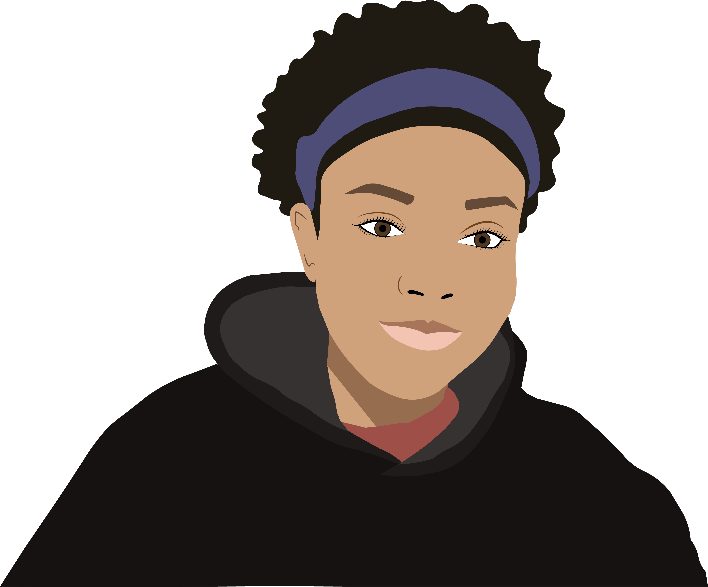
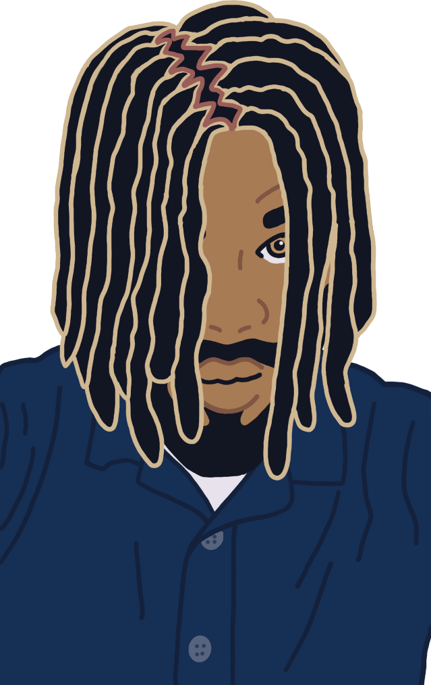

Portfolio
Art
Portrait Vector Illustration

After conceptualizing a logo for a small business, based on the client's portrait, I was inspired to make my own vector portrait. I used a photo of myself as the reference, and created different vector elements using Adobe Illustrator.
Through this project, my proficiency in the pen tool improved, and I developed a better understanding of lighting and shadows, which I hope to implement in future art work. This illustration is now apart of my personal branding, and included on all my professional accounts.
It has helped me gain more clients to do freelance work as a cartoon portrait artist for personal use or for their own businesses.
Adobe Illustrator
West Indies Youth Association of Ottawa Logo
This logo was created for the West Indian Youth Association of Ottawa, a youth organization for those of Caribbean heritage. I've volunteered with them whilst looking for a community, and proactively took the opportunity to design a new logo for their branding.
The concept is based of their previous logo, however I tried flat illustration techniques with some rudimentary shading and lighting. Their previous logo acted as a reference, and color palette generator. I utilized the pen tool and shape builder on Illustrator
to create the different elements. This was received by the organization's president and immediately implemented on their socials. It's one of my favorite logos,
and I had a lot of fun creating it, as it also reminded me of home.
Adobe Illustrator
Clients Cartoon Portrait

This cartoon portrait was created a client using Procreate. I wanted to try a new art style with digital photo painting instead of vector art. This client wanted a cartoon portrait to help with their promotions for music production. I used their preferred photo as a
reference for the illustration. Before creating this, I tried a few sketches on Procreate to learn the software. It's much closer to traditional art compared to Adobe Illustrator. The client really liked this art piece, and wants to work with me in future for more
illustrated works. This has also encouraged me to learn how to draw human anatomy which will help me create my own characters for games.
Procreate
Development
Web Portfolio
This is a personal website that showcases my skills and projects. It was built using different frontend technologies listed below, and hosted on Github pages. A web portfolio is something every developer should build.
Before jumping into the coding, I used Figma to create the design for both the mobile and desktop view. Also, I focused on responsiveness and learned a bit more about web accessibility to improve inclusivity. I am currently working on updated this project to include a backend with Django, and hosting separately with my own domain.
Figma
HTML
CSS
Bootstrap
JavaScript
Git
Click image/gif to view source code
Great Turtle Race
A racing game with turtle players, where the user can place a bet on the turle they think will win. With my previous knowledge in Python, I wanted to try game development. I built this simple game using the turtle library that provides different methods and assets that can be used for visuals.
This was built for the desktop using the PyCharm IDE which is great for Python projects. Each iteration of the game will produce different results, due to the implementation of the random module.
Python
Turtle Module
Random Module
PyCharm IDE
Click image/gif to view source code
Feed The Snake
A classic snake game, where the user plays as the snake that eats different meals, and avoid eating it's own tail. I built this game using the Turtle library and implementing basic object oriented program concepts.
The snake has to avoid eating it's tail and going outside of the border, whilst hunting for it's food. The user can control the snake using the arrow keys on their keyboard. Anytime the snake catches its prey, the
user's score increases. The game ends when the snake collides with the border or eats it's tail. The score is displayed at the top of the screen.
Python
Turtle Module
Time Module
Object Oriented Programming
PyCharm IDE
Click image/gif to view source code
Design and Story
Game Idea: Rustic Racers
This is a car racing game that takes place in iconic and scenic locations. Players can race classic cars through different routes and challenging tracks. The game provides a thrilling excitement as players race against each other, gain rewards, and level up.
Additionally, it gives off a nostalgic feeling with the use authetically designed vintage vehicles.
Key Features and Elements:
-
Vintage Car Collection: Every player has a personal garage where they can save their favorite cars. The garage can be personalized to match the player's profile, and used for 'car showcasing' events. As they level up, players can add more cars to their garage, as well as use their
cash/rewards to upgrade their cars.
-
Challenging Tracks: Tracks will have different levels of difficulty, with recommended vehciles that would best match it's terrain. Players can choose any vehicle, but it must meet the minimum requirements of the track. The scenery will be inspired from popular locations, as well as a few fantasy like
environments for special events. For example, racing through a cyberpunk themed enironment, abandoned cities with overgrown trees, and much more. Certain tracks will require a specific score to be unlocked.
-
Customizable: Along with their garages, players can customize the appearance of their cars (paint, decals, and physical upgrades). Players can also customize their avatars to best match their style and to stand out on the race track.
-
Single player and multiplayer modes: Players can choose single player or multiplayer mode. They can engage with AI controlled opponents in single-player mode or challenge friends and strangers in multiplayer races. Players can form guilds, befriend other players, and even trade amongst themselves. For example,
players can trade car parts with one another in a marketplace. Friends can challenge each other on race tracks, as well as guilds challenging one another.
-
Power-ups and Boosts: Players can find power-ups scattered throughout the tracks to gain an edge over opponents. For example, the player can activate turbo boosts, shield themselves from obstacles, or unleash unique abilities of their car to gain an advantage.
-
Dynamic Weather and Time Cycle: Garage weather conditions can change based on the player's locations. On the race tracks, day and night cycles occur as well as different weather conditions. This is to offer some realism in the game, and to help players become adaptable to different race conditions.
-
Career Mode and Levelling Up: Players can progress through a series of races that helps them level up, unlock new cars, and earn rewards. Their achievements can be added to their profiles, as well as display badges and awards in their garage.
-
Leaderboards and Achievements: Players can aim for the top spots on global leaderboards to gain more rewards and achievements from accomplishing different milestones.
Game Idea: Leo's Quest
This is an enchanting and whimsical adventure game where the main character is a cat named Leo. A curious cat with a desire to become human after it's owner feeds him past his usual meal time. At the beginning of the quest, Leo discovers the secret society of animals.There is
a rumor of a magical item that can turn animals into humans. The player, now Leo, embarks on a captivating journey, meet interesting characters, overcome challenges, and uncover secrets of the animal society as well as learn more about humans.
Key Features and Elements:
-
Play as Leo: Players assume the role of Leo, a determined cat wanting to become a human. The player will navigate through diverse environments and unravel side quests and mysteries for both animal and human society.
-
Engaging Storyline: Plays will engage with a captivating storyline filled with humor and unexpected twists. Besides the main quest, there will be a few side quests, that will improve Leo's stats and level up throughout the game.
-
Vibrant Environments: Animal society aims to keep with nature, and live in visually stunning enviroments unbeknownst to humans. Leo will travel through lush forests, mysterious caves, ancient and modern cities, and much more. Each location will need Leo's help, that will provide
a reward that will further his main quest.
-
Characters: There will be a diverse cast of characters, both animals and humans. Leo can engage in meaningful interaction with other characters to learn more about quests and the locations. This can also help him forge valuable friendships.
-
Puzzles and Challenges: Leo will need his wit and creativity to conquer different puzzles and challenges to move on with his quest. As he progresses, a sinister plot will be revealed.
-
Upgrade Leo: As the game progresses, the player can collect and earn rewards to enhance Leo's abilities and appearance. They can acquire special powers, cool outfits, and accessories to aid Leo and show his growth.
-
Multiple Endings: The player's choices will affect the outcome of Leo's quest. This creates a sense of replayability and player agency.
-
Captivating Art & Sound: The game uses visually echanting art style that brings the animal kingdom to life.
Game Idea: Earth Guardians
This is an immersive MMORPG that combines the fun of online multiplayer gameplay with a focus on promoting sustainability and eco-friendliness. The virtual world is similar to Earth, except nature is at it's brink, and it's becoming more uninhabitable for many.
Players become guardians of Earth, and work together to protect and resore the environment through recycling, conservation efforts, and sustainable practice. Except this is not done in a mundane way, a powerful being has blessed these guardians with powers that match
different elements of Earth (wind, fire, water, metal, and more). It's up to the guardians to use these powers in creative ways to work with others, embark on quests, and change the destiny of the virtual world, whilst learning more about real-world sustainability.
Key Features and Elements:
-
Massive Multiplayer Online World: A vast world that simulates a destitute Earth, filled with players from around the world. Players can interact, collaborate, and form alliances with other fuardians to tackle different challenges. Players can build homes, as well as
alliance buildings to meet with other players.
-
Character Creation: Players can create a unique guardian character, from various races, classes and visual customization options. Players can personalize their avatar and tailor their skills to match their preferred playstyle.
-
Dynamic Environment: The game world is an evolving one with a dynamic system that react to player actions. Players will witness the consequence of pollition, deforestation, and resource depletion while actively working to restore balance to the world.
-
Cooperative Quests: Players can work together in quests and missions that work to build balance. They can work together and combine their skills in creative ways to clean up polluted areas, plant trees, rescue endangered wildlife, and mitigate the impact of human activities
on the virtual ecosystem.
-
Crafting: Players can develop crafting skills based on their powers, or learn low level ones that can be sold or used in quests. They can collect materials, recycle items, and create eco-friendly products to support the in-game economy and contribute to environmental preservation.
Players can trade these items among alliance members, friends, and even outsiders. Some side quests might need a crafted item for completion.
-
Eco-friendly Bases: Players can establish eco-friendly communities for alliance members to live in, or for non-player characters to move to. Players can design and build this communities and buildings, using renewable energy systems and self-sufficiency like farming and permaculture.
-
Competitive Gameplay: Players can engage in competite gameplay through environmental challenges, eco-races, and special events. Alliances can compete with one another in large scale events to gain community rewards. Players can level up their skills and stats from rewards.
-
Educational Content: The game will provide real-world sustainability practices and initiatives to help educate players. They can participate in virtual events, workshops, and seminars that promote awareness and provide opportunites to connect with environmental organizations.
-
Real-World Impact: On the business side, this game could help establish partnerships with real worl sustainability organizations and initiatives. It can help stakeholders make a tangible difference both in-game and in the real world.